STAFF MANUAL
まつりしんとみ2026
開催概要
開催概要・主な時刻
日時
20XX年XX月XX日（X）午前9時〜午後4時ごろ（16:05のせんぐまきで終了）
場所
新富町総合文化公園 中央広場新富町上富田 6374
主催
まつりしんとみ実行委員会
内容
オープニング（一真保育園・風船飛ばし・ななつ星太鼓）、町民ダンス発表会、D-1グランプリ（初開催・16店舗）、謎解きイベント、ラムネ早飲み選手権、キャラクターショー、障害物競走（初開催）、なりきり選手権、町民ミュージカル、大抽選会、せんぐまき等。飲食・雑貨・ワークショップ・キッチンカーも出店。
趣旨
関係人口増加を目的とした地域活性化のための祭り。対象：新富町民を主とした児湯地域住民。
6:15実行委員集合
7:00出店者搬入
8:30搬入車両 撤収
9:00開会式
14:30抽選券・D-1投票 締切
16:05せんぐまき
16:30搬出開始
17:00換金 締切
「子どもたちが帰ってきたくなる町へ」
当日タイムライン
時間ごとの進行と担当
- 前日 11月22日（日）
-
15:00〜18:00前日準備出店者のみ入場可
- 当日 11月23日（月・祝）
-
6:15実行委員集合（文化公園）・駐車場ビラ設置・誘導準備全委員誘導灯・各駐車場の案内ビラ・誘導場所の振り分け表
-
6:30青年部・役場のお手伝いスタッフ集合誘導灯を持って各担当位置へ
-
7:00〜8:00出店者搬入全委員で車両誘導（◇川畑）8:30までに車両搬出完了。学生ボラ早番7人集合。誘導の配置は「搬入出」欄
-
7:30ななつ星太鼓 搬入倉永（挨拶回り）
-
7:50学生ボランティア集合・風船膨らませ開始◇井崎（風船）、稲田（ボラ打合せ）、渡邉風船300個・風船クリップ / 控室：姿見1・机6・いす3〜4・注意書き
-
8:00司会集合・最終打合せ（本部）／和太鼓セッティング・リハーサル倉永・有賀（司会打合せ）、渡邉・黒木（商品券・整理券・景品確認、自衛隊の抽選会景品受け取り）8:15 出店者向けアナウンス「8時半までに搬入用車両を敷地外へ」
-
8:30和太鼓セッティング完了・搬入車両の撤収完了緒方（和太鼓対応）誘導は東・中山・草野・青年部1〜2人で8時半まで。誘導灯は中山が回収して本部へ
-
8:40肥育部会 整理券配布スタート肥育部会
-
8:45ラムネ早飲み・障害物競走の整理券配布（本部前）斉田・渡邉（ラムネ受付）、草野・黒木（障害物）ラムネ55枚（小学生以下40・中学生以上15）／障害物28枚（小学生以上、大人と子どもは分けない）。障害物の方には粉マシュマロを使うことを説明
-
9:00①開会式倉永・緒方（来賓アテンド・司会補助）来賓：比江島副町長・川野商工会会長／来賓用いす3脚・ステージマイク6本／同時に肥育部会の肉振る舞い、町民ダンス出演者集合（本部→控室）
-
9:10②OPパフォーマンス：一真保育園草野・黒木（ステ補助）子ども20名。布バルーン（ステージ下）と鼓笛（ステージ上）。マイク1本・コンセント1
-
9:30③風船飛ばし井崎・徳山・斉田・川畑・稲田・学生ボラ（配布）、倉永（来賓）約300個。司会・来賓にも風船を渡す
-
9:40④OPパフォーマンス：ななつ星太鼓七つの星幼稚舎。ステージ上と下の両方を使用
-
10:10⑤町民ダンス発表会〜前半有賀・草野（ダンス誘導）、緒方（ダンス菓子）REP Miyazaki（10:10・10〜12人）→ M.STELLA（10:25・12人）。ダンサーに参加賞のお菓子
-
10:40★D-1グランプリの案内16店舗。投票箱は本部と入口近くの2か所、投票は14:30まで
-
10:55謎解きイベントのお知らせ二川ちなみ受付は文化会館から階段を降りた左手、最終受付14:15。クリア者にお菓子（先着300名）
-
11:20⑥ラムネ早飲み選手権倉永（審判）、緒方・井崎・徳山・斉田（出場者誘導）、渡邉・黒木（景品・上手）、学生ボラ（ステージ補助）5人×10レース（小学生以下8・中学生以上2、ヴィアマ選手2人は中学生以上の最終組）／各レース1・2位に商品券500円、入賞以外は抽選券
ラムネ60本・テーブル2・空き瓶用段ボール・ゴミ袋・雑巾6・水入りバケツ2・ブルーシート -
12:05⑦町民ダンス発表会〜後半稲田（ダンス誘導）、緒方・渡邉（ダンス菓子）／並行：井崎・徳山・斉田・川畑（なりきり受付）、有賀・東・草野（障害物準備）Radiance Miyazaki（12:05・7人）→ Bell design（12:20・40人、紹介文は子どもたちが読む）
-
12:35なりきり選手権 出場者集合・受付稲田・井崎・徳山・斉田・川畑くじで出場順。出場順・音源を司会／シェビー／運営用の3枚で共有。前半組13:15・後半組13:45集合
-
12:38⑧みんなでひなたのチカラ！！渡邉（キャラアテンド）キャラクターショー：みやざき犬・みやねこ・おとみちゃん・じゃーろくん（来る見込み）・てんてん／マイク：司会2本・アテンド2本／倉永は順次ランチ
-
13:10⑨障害物競走（小学生以上）倉永（審判）、緒方・井崎・稲田・草野（出場者誘導）、渡邉・東（景品）ぐるぐるバット10回→10m→スプーンピンポン5m→粉マシュマロ→ゴール（ステージ前の20m）
4人×7レース（ヴィアマ2人＋先着26人）。スタートはボランティアのホイッスル、ゴール判定は東／勝者に商品券500円、参加賞は抽選券
高校生：マシュマロ準備2・ゴールテープ2（＋実行委1）・備品4
備品：抽選券30・500円券10・小麦粉・ボール8（粉は事前に8セット）・ホイッスル・スプーン5・ピンポン玉5・ラップ2・長机2・ゴールテープ -
13:45⑩なりきり選手権倉永（登壇）、緒方（司会連携）、井崎（採点表回収）、徳山（タイムキーパー）、斉田・川畑・稲田（出場者誘導）、渡邉・黒木（景品）子どもの部は中止 → エキシビション（おとちゃん・すっとこどっこいず）
大人の部 11組・1組3分以内／賞金10万・3万・1万（封入）、審査員特別賞3組（霧島酒造）、参加賞2,000円券×10
審査員6名：ヴィアマ2・比江島副町長・小山早苗町議・高校生2（テーブルはハの字）／音源はCDかBluetooth -
14:30抽選券・D-1投票の締め切り渡邉・稲田・東・草野・黒木（抽選会準備）14:45〜 大抽選会とせんぐまきの準備、景品の数を確認／なりきり選手権の表彰（倉永から景品）
-
15:00⑪町民ミュージカル PR（10分）
-
15:15⑫新富ブルームガーデン 源かおりさん 活動紹介
-
15:20⑬D-1グランプリ 結果発表いすえ（賞状）3位→2位→グランプリ（トロフィー・賞金3万円）
-
15:30⑭高校生ボランティアの紹介稲田、緒方（抽選会ゲスト誘導）、井崎・徳山・斉田（抽選会の机準備）ボランティア全員が壇上へ。抽選会ゲスト（おとみちゃん＋α）集合
-
15:35⑮謎解き 抽選会二川テゲバ・ヴィアマの全選手サイン入り黄金ボールを各1名（できれば選手が抽選）
-
15:40⑯大抽選会倉永（抽選者）、緒方（ゲスト誘導）、井崎・斉田・稲田（次の景品）、徳山・川畑・渡邉・黒木（当選者対応）前半：こゆ財団・伊藤酒屋・松浦牧場・ピラキラ・パパイア王子・キムラ漬物・新緑園・みどりとすずめ・おにぎり宮本・航空自衛隊
後半：徳山味噌醤油・井崎製作所・キートス・梶やんのとうふ食堂・中村養鰻場（うなぎ）・テゲバ・ヴィアマ・商工会・こゆ牛
机3台・目録・抽選券・1位2位3位ボード。終わったら椅子を片付ける -
16:00ハートグローバル 歌唱パフォーマンス（ステージ下）有賀（告知）、川畑・稲田・東・黒木（せんぐ準備）30名。この間にせんぐまき準備、観客はその場で待機
-
16:05⑰せんぐまき → 終了倉永（ステ上）、緒方（ゲスト誘導）、井崎・徳山・斉田・川畑・稲田（キッズエリア）、渡邉・黒木（補助）前方は小学生低学年以下のキッズエリア（ロープ）、中学生以上は後ろ／ヴィアマ選手2人も撒く、おとみちゃんもプレゼンター／お菓子箱×10
-
16:30搬出開始・出店者の車両移動OK井崎・徳山・斉田・川畑・中山（車両搬出）、緒方・渡邉（出店者対応）それまでは車内待機・車両移動禁止を徹底
-
17:00出店者の商品券換金 締切緒方・渡邉ステージ下手の本部。学生ボラには証明書を渡す
-
17:00〜全体撤収全員
臨機応変に対応すること
自分の動き・班分け
自分の動き（名前を選ぶ）
名前を選ぶと当日の動きを時間順に表示。F＝フリー / 撮影：中山 取材：草野
▶ 役割表（運営用進行表）のPDFを開く
▶ 役割表（運営用進行表）のPDFを開く
当日の班分け
11月15日 仮決定（中山）
あとは柔軟に対応。
| 班 | 担当 |
|---|---|
| 本部・ステージ班 | いすえさん、たかもりさん、草野さん、徳さん（午後から）、さゆみさん、東さん、川畑さん、ボランティア15〜20名 |
| エリア対応班 出店料確認、D-1対応、トイレチェックなど | ボランティア3〜5名 |
| エコステーション班 | ボランティア3〜5名（交代しながら） |
| アンケートブース班 | 斉田さん、ボランティア3〜5名（交代しながら） |
| ボランティア統括&ステージなど班 | いなっちさん |
| 写真撮影班 | マーシー |
| 別班 | 佳祐さん |
搬入出・誘導
搬入ルール・誘導員の配置
🚚 搬入経路図・誘導員の配置を開く
| 時刻 | 出店者の車 |
|---|---|
| 前日 15:00〜18:00 | 前日準備（出店者のみ入場可） |
| 当日 7:00〜8:00 | 搬入。8:15にアナウンス、8:30までに車両を敷地外へ |
| 9:00〜16:30 | 車内待機・車両移動禁止 |
| 16:30〜 | 搬出開始（車両移動OK） |
| 17:00 | 商品券換金 締切（ステージ下手の本部） |
搬入ルート
🚗 ハザード点灯・時速15km以下で徐行を徹底
↻ 公園内は右回り（一方通行）
↻ 公園内は右回り（一方通行）
- キッチンカー（K1〜K19）：外周を右回りで進み、K1から先着順に詰めて区画に入り、そのまま出店
- 一般ブース（飲食・雑貨）：外周を右回り → 自分のブース近くで荷下ろし → ④西側入場口の合図で外へ → 西駐車場
- C・Dブロックは A11付近から、E・Fブロックは K15付近から場内のレーンへ
- ④西側入場口は入る車と出る車が交差するので、誘導員が交互に止めて通す
誘導員の配置（番号は搬入経路図と共通）
車両誘導：緒方・井崎・徳山・斉田・◇川畑・稲田・有賀・東・中山・草野・黒木（倉永は挨拶回り）
①交差点を直進案内
②出入口へ案内 → 落ち着いたら③の補助
③詰めて停車。満車時は臨時駐車場へ案内。④と入退場の調整
④入る車と出る車を交互に止めて通す（交通整理）、出店位置の告示
⑤退場車の調整。④の補助
⑥振り分け（外周／C・Dレーン）
⑦徐行要請、合流調整
⑧キッチンカー誘導（K1から順に詰める）
⑨誘導、合流調整（C・Dレーン入口）
⑩誘導、合流調整
⑪誘導、合流調整
⑫誘導、合流調整
⑬補助（E・Fレーン）
⑭徐行要請。進入調整
⑮駐車整理、入退場補助
⑯徐行要請。進入調整
8時めどに縮小体制（15人 → 5〜7人）
● 8:30まで：東・中山・草野・青年部1〜2人
● 誘導灯は中山が回収して本部へ
会場レイアウト・駐車場
全体レイアウト図
全体レイアウト図（2026年版・図13拡大／11月21日）
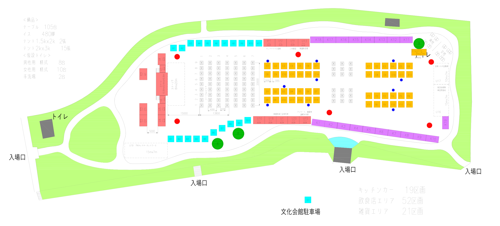
キッチンカー 19区画（K19を追加）／飲食店エリア 52区画／雑貨エリア 21区画
●青丸＝D-1グランプリ参加店 ●赤丸＝謎解きパネル
▶ 店名で探せる会場案内（スマホ向け）
▶ レイアウト図PDF（11月21日） ▶ 出店者場所一覧PDF（11月16日）
●青丸＝D-1グランプリ参加店 ●赤丸＝謎解きパネル
▶ 店名で探せる会場案内（スマホ向け）
▶ レイアウト図PDF（11月21日） ▶ 出店者場所一覧PDF（11月16日）
駐車場（出店者・スタッフ・関係者）
出店者駐車場 → 西駐車場（満車時は北側駐車場へ）
スタッフ駐車場 → きらり横
警備員配置 → 8:00〜17:30（休憩含）
スタッフ駐車場 → きらり横
警備員配置 → 8:00〜17:30（休憩含）
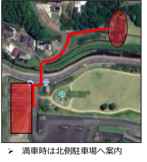
関係者駐車場（2026年）
コーン（生涯学習課）… 20個、各種サイン
▶ 関係者駐車場割り振り2026（PDF）
▶ 関係者駐車場割り振り2026（PDF）
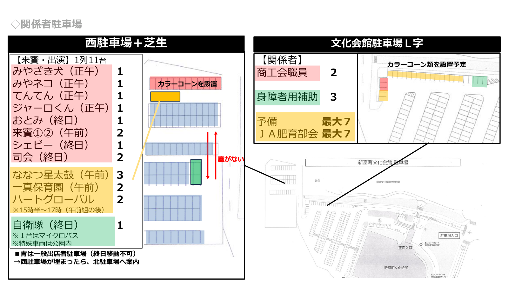
図にないもの：審査員 小山早苗さん 1台、ヴィアマテラス 2台
警備員配置図・補足図
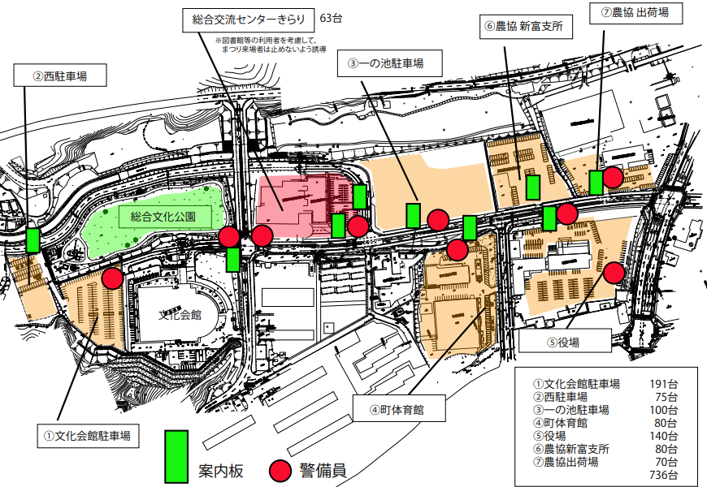
補足図
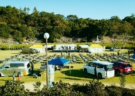
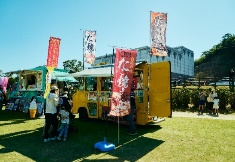
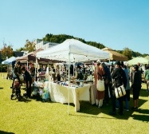
出店者一覧
出店者一覧・ブース案内
飲食・雑貨・ワークショップ → 事前割り振り
キッチンカー → 入場順にK1から配置。車の長さがまちまちなので区画で区切らず、入った順に詰めながら停めてもらう
キッチンカー → 入場順にK1から配置。車の長さがまちまちなので区画で区切らず、入った順に詰めながら停めてもらう
| 場所 | 店名 | D-1 |
|---|---|---|
| 飲食店（43店） | ||
| C1 | kitchen バロン | D-1 |
| C2 | 中田製菓 | |
| C3 | 甘処hanan | |
| C4 | 9 | |
| C5 | 燻製工房山本商店 | |
| C6 | 自然と | |
| C7 | MONOQLO.宮崎×観音池ポーク | D-1 |
| C8 | 中村屋 | |
| C9 | よりみち | |
| C10 | Sweet Garden | |
| C11 | ヒノマルコーヒー | |
| C12 | 八番 | |
| C13 | 南国プリン | |
| C14 | ながのうどん店 | D-1 |
| D1・D2 | 昭元商店 | |
| D3 | テッポウうどん | D-1 |
| D4 | フルーツジュース7 | |
| D5 | ビジネスチャレンジレモネードスタンド | |
| D6・D7 | ベストフーズ | |
| D8 | 空の駅竜馬 田中商店 | D-1 |
| D9 | 甘粉ちゃん | |
| D10 | おかずクレープRU-CRE | |
| D11 | 霧島酒造 | |
| D12 | AOKI FARM COFFEE | |
| D13 | あゆみの里 | D-1 |
| E1 | 誠屋 | |
| E2 | オーガニックショップしずの森 | |
| E3 | 城屋本舗 | |
| E4 | dining cafe SUN | D-1 |
| E5 | JA青年部 | |
| E7 | 光樹屋 | D-1 |
| E8・E9 | 珈琲専科 批呂 | |
| E10 | 麗 | |
| E11 | 金松うなぎ | D-1 |
| F1 | 伊藤酒屋 | |
| F2・F3 | 光和商事 | |
| F4 | OMUSUBI MURA | D-1 |
| F5 | まちかど珈琲焙煎所 | |
| F7 | 椎の実 | |
| F8・F9 | 松浦牧場 | |
| F10 | SmileBond | D-1 |
| F11 | 梅の木ライフ | |
| F14・F15 | 肥育牛部会新富支部 | |
| キッチンカー（18台）※入場順にK1から | ||
| K | ベビーカステラ専門店MOGMOG宮崎支店 | |
| K | RiRi | |
| K | :Re/Do | |
| K | インド料理サジョワン | |
| K | ひっぱり蛸 | |
| K | おにぎり宮本 | |
| K | Mareëgo（マレーゴ） | |
| K | キッチンファームイワタヤ | |
| K | ぷらすわん | |
| K | 呑処 笑 | |
| K | 食堂POMPIER | |
| K | なんば一番たこ焼きおやじ | |
| K | はるぴっぴ | D-1 |
| K | KLEIN | D-1 |
| K | DONDON | D-1 |
| K | 沖縄キッチンDouchi | D-1 |
| K | カラフルわたがし | D-1 |
| K | Mr.Perez's kitchen－ペレスキッチン－ | D-1 |
| 雑貨・ワークショップ（21店） | ||
| A1 | MUSUBIMONO | |
| A2 | Radiance Aromalife | |
| A3 | la_pause.peta_art | |
| A4 | Chacorin | |
| A5 | valley（バリー） | |
| A6 | おもちゃ屋ともぞう | |
| A7 | 宮崎ヨーヨー | |
| A8 | めだか専門店 虹屋 | |
| A9 | 雑貨屋 Macherie | |
| A10 | amorose | |
| A11 | ぎゃりいぱちぱち | |
| B1 | ぷっち＋プラス | |
| B2 | 緑日つくる | |
| B3 | chou☆chou | |
| B4・B5 | 星和堂 | |
| B6 | Fun | |
| B7 | ラキラキカウラ | |
| B8 | BellDesign | |
| B9 | てっぽうや | |
| B10 | メナードフェイシャルサロン広瀬 | |
| G1 | 斉田商事 | |
| 運営・イベント（U） | ||
| U1 | 新富町商工会青年部 | |
| U2 | ボランティアスタッフ控室 | |
| U3 | ボランティアスタッフ控室 | |
| U4 | 運営スタッフ控室 | |
| U5 | 運営スタッフ控室 | |
| U6 | 本部席、救護室 | |
| U7 | 音響 | |
| U8・U9 | 出演者控室 | |
| U10 | 新富町商工会女性部 | |
| U11・U12 | ヴィアマテラス宮崎 | |
| U13 | 新富町役場 | |
| U14 | 一般財団法人こゆ地域づくり推進機構 | |
| U15 | アンケート、抽選券、謎解き本部 | |
| U16 | 航空自衛隊新田原基地 | |
| U17 | 宮崎トヨタ自動車 | |
| U18 | 都農町商工会青年部 | |
| U19 | PKキックターゲットブース | |
| U20 | エコステーション | |
D-1＝D-1グランプリ参加店（図13の○）。謎解きパネルは5か所、本部はU15。キッチンカーは入場順にK1から詰めて停車
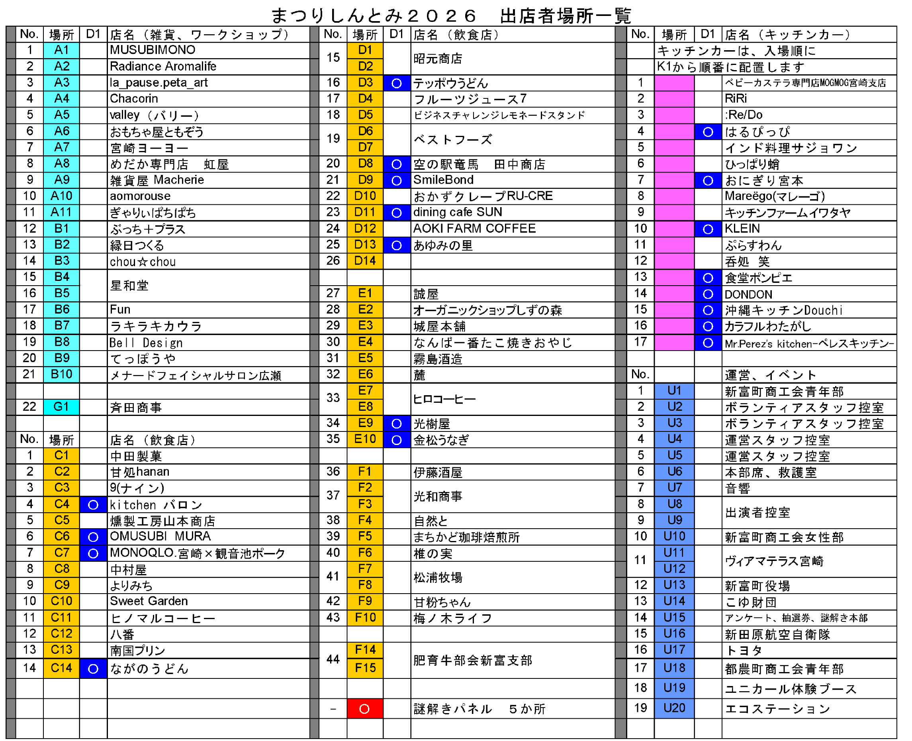
商品券・抽選券
商品券・抽選券について
各プログラムの賞品として商品券を配布（当日のみ使用可）。金額はプログラムにより異なる（500円〜1,500円）。
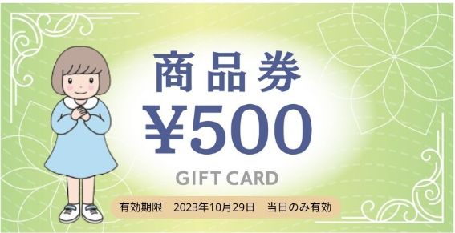
◇ 換金について
イベント終了後 17:00 までに運営本部にて換金。必ず釣り銭を用意しておくこと。
◇ 抽選券について
事前に全戸配布済み。当日の各プログラム景品等でも配布。
当日は半券を切るよう適宜アナウンスすること。
チケット切り取り図
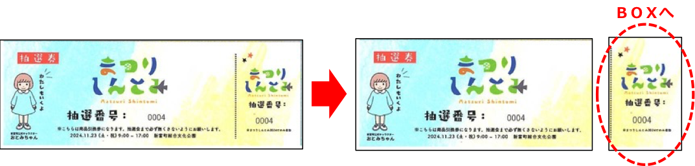
連絡先・ボランティア
実行委員会 連絡先一覧
| 役職 | 氏名 | 連絡先 |
|---|---|---|
| 実行委員長 | 倉永 | 090-4344-9098 |
| 副実行委員長 | 緒方 | 080-5133-1673 |
| 事務局長 | 井崎 | 090-6765-5631 |
| 委員 | 中山 | 080-1775-4538 |
| 委員 | 徳山 | 090-8768-9456 |
| 委員 | 有賀 | 080-5462-8462 |
| 委員 | 川畑 | 社: 090-5730-0451 私: 080-1795-5533 |
| 委員 | 渡邉 | 080-5242-1718 |
| 委員 | 有馬 | 090-1165-5892 |
| 委員 | 稲田 | 090-1342-9129 |
| 委員 | 草野 | 090-1081-7965 |
| 委員 | 斉田 | 090-8667-3577 |
| 委員 | 東 | 090-8664-5658 |
ボランティア（高校生）対応
集合：7時50分
担当：稲田・井崎・徳山・斉田
- ステージ周り補佐全般
- トイレットペーパーの定期確認
- おとみ引率（徘徊時）
- 会場見回り
- 風船づくり作業
- 整理券配布
- アンケート配布
- その他必要に応じて
当日チェック
開場前のチェック
チェックした内容はリロードしても保持されます。全員分終わったらリセットしてください。
緊急時対応
緊急時対応
宮崎県東児湯消防組合
高鍋警察署
2026年11月時点
消火器の位置
→ 各自で事前に確認すること
病人・けが人発生時
- 状況を確認 → 店舗責任者から本部に連絡
- 軽傷・休息が必要な場合：本部を救護室として使用。店舗スタッフまたは実行委が付き添い、常時状態を観察する。
- 急病・重症・緊急の医療対応が必要な場合：迷わず救急車を呼ぶ（119番）
落とし物の対応
開催中 → 会場受付で対応（休憩時に司会より案内）
終了後 → 主催者にて保管
緊急連絡・救護位置図
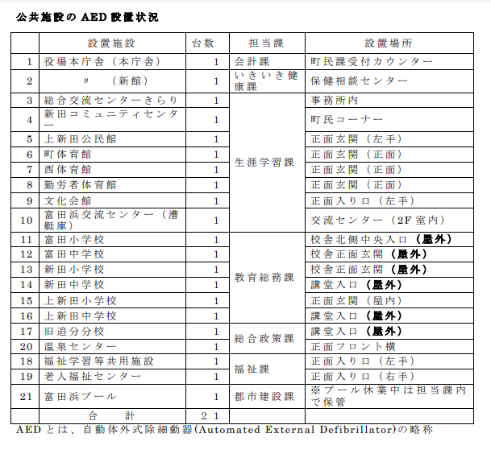
運営ルール
開催変更・中止の判断
| 状況 | 対応 |
|---|---|
| 雨天 | 予定通り開催 |
| 荒天 | 主催者判断で中止 イベント前日 午前6時に判断 |
| その他やむを得ない事象 | 主催者が開催困難と判断した場合は中止 |
出店者への返金
実行委判断による中止の場合、支払い済みの出店料金は返金。ただし出店準備費・交通費等は事務局負担外。
来場者の撮影対応
「まつりしんとみ」開催中、実行委・撮影スタッフが撮影する写真・動画の著作権は実行委に帰属し、必要と判断した用途にのみ使用することを基本方針とする。
【禁止事項】（見かけたら注意を促す）
- 安全な会場運営の妨げとなるような行為
- 長時間にわたって多くの来場者の視線を妨げる行為
- 脚立等により他来場者の安全を妨げる行為
- 執拗なフラッシュ撮影など出演者の迷惑となる行為
上記以外でも運営に支障をきたすと委員長が判断した場合は個別に注意する。
該当する項目が見つかりませんでした。